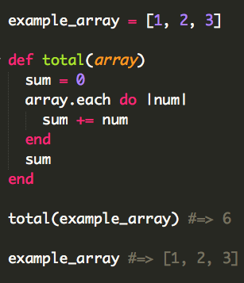
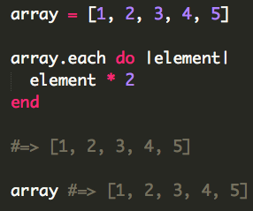
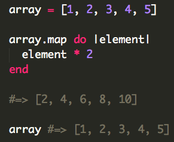
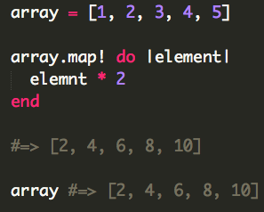
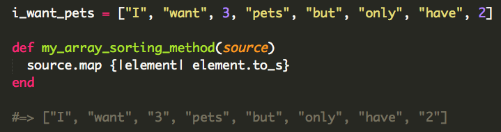

git, GitHub, & Version Control: Programmers' Godsend September 18, 2014 Version control in computer programming has many benefits. For one, it basically allows the programmer to "go back in time" in that various versions of the project are saved throughout a period of time. If the programmer works on the project, but accidentally adds a bug in committing those changes, they can go back to the version of that code *before* they made that mistake, rather than trying to figure out how it was before. This saves a lot of time, panic, and effort! Version control is also essential in collaborative projects, where there is more than one programmer working on a code base. It allows the programmers to each have their own copy of the code base, and make changes to that personal copy (and test those changes to make sure they work/don't add a bug) before adding it to the master copy. Git is software that makes version control easy. It runs in the background of any directory you decide to initialize with git. It
-notices if you have made any changes to that directory, whether it be adding files or editing files,
-knows exactly what those changes are, and can show you them, and
-allows you to save ("commit") those changes along with a small message where you describe what changes you have made. Git then keeps a log of your commits (changes), and you can go back and see the code as it was before and after the various changes you made. GitHub is another useful tool for programmers, especially for teams of developers. Storing your code on GitHub allows you to collaborate with people remotely, so you can theoretically work on a project with a remote team all around the world, so long as they have Internet access. While git lives locally on your computer, and is therefore useful for working on your local disk, GitHub lives on the cloud, and works in tandem with git to push your code on to GitHub, enabling other team members to see your code, and enabling *you* to make changes to the master copy of the project. GitHub also provides peace of mind, knowing that your code is stored on a remote and very reliable server; it basically acts as a backup of your code.
CSS Subtleties: Margin, Padding, & Border September 28, 2014 After having immersed myself in the world of HTML and CSS through creating a fully functional website in a mere 36 hours, I came out of it with a great deal of knowledge (although admittedly an equally great deal of questions) about front-end web development and design. Today I will do my best to explain one such piece of knowledge of which I feel I have a pretty clear understanding: the difference between margins, padding, and borders. To understand these topics at all, I need to first explain the fundamental structure of almost all websites. When you load a website, you immediately notice that its content is organized in a certain way. You may have a header bar, one or several content areas, a navigation bar, a footer, etc. There is always a lot of thought (or there at least should be!) that goes into this design. When writing the code for the website, what allows the programmer to tell which material to go where? Well, odds are, the tool s/he used was the div. A div, which derives from the word "divide" is a part of the web page that you section off. Making divs is really easy in the HTML file (the content and framework part of the site), but the challenging part is bringing them to "life" using CSS (cascading style sheets). When you create a div in the HTML, it exists, but it has no idea where to go on the web page, so you give it instructions by using CSS properties like so:

Now, what's the difference between padding, margins, and borders? First, let me explain padding and margins, as they are the most closely-related and confusable of the three. The margin of a div determines how much space the div has relative to other divs and the confines of the web page. If you set a div with all four margins set to 0, it will exist flush against other divs or the edges of the web page. There will be no breathing room. So the margin determines the space outside of the div itself relative to other elements of the web page.
The padding, on the other hand, is more inward-looking. It determines how close the div's content can get to the div's end. If you set all four sides to padding 0, the content will extend right up flush against the outer walls of the div. If you give the content more padding, it will stay away from the outer walls. You can compare the margin vs. padding issue to government, as margin is like foreign policy (how divs interact with the outside world), and padding is like domestic policy (how divs treat what's inside of them).
Finally, the border is simply that: the outermost part of the div. The border doesn't really determine anything about the div's relationship with other divs (margin) or its own inner content (padding). Rather, it is an almost purely stylistic feature. You can style the border in many ways, from a simple black solid line, to a dotted line, to even 3-D designs. Borders adds some character to the website and help compartmentalize the content. The one trick with the border is that if you make very large borders, they actually protrude outside of the div's territory (imagine an extremely thick border fence around a country that cuts into its neighboring country's territory). The programmer has to watch out for this, and sometimes has to compensate for large borders by changing around margins so that the border doesn't interfere with other content. Other than this case, borders don't really influence relationships between divs, and certainly not relationships between divs and their content.
So there you have it! I hope I helped clarify some confusion regarding these topics!
Arrays & Hashes: One is Silver and the Other Gold September 30, 2014 Now almost a third of the way through Phase 0 of Dev Bootcamp, we've finally moved on from git, HTML, and CSS to the true heart and soul of programming: scripting -- the part that actually makes your web site do stuff rather than just display it. For the first blog topic, we'll discuss arrays and hashes, which are two ways of storing data. Arrays and hashes are each their own classes in the Ruby programming language (the one we'll focus on at DBC), meaning they come with their own set of rules that govern how they can be used, and methods than can manipulate the data within them. First let's talk about arrays, since they're simpler, and understanding hashes is easier once you understand arrays.
An array is a series of elements grouped and stored together, separated by commas. They are encapsulated by a pair of brackets on both ends of the series of elements. The elements can be of various types, including strings, numbers, symbols, etc, such as the example below illustrates.

Yes, you actually can store an array inside of an array! In addition to the element itself, the array knows where the element is in the array, something called the array index. The index begins at zero, so the first element of the array can be called like so:

How would you call the second element of the array within the parent array?

Good. Now that we have an understanding of arrays, we can delve into the world of hashes. Hashes are similar to arrays in that they are also a means of storing a series of elements, but they don't just stop there. Hashes store relationships between its elements in what are called key-value pairs. Whereas an array could store a list of cities:

the hash could store them AND tell you their populations (or whatever corresponding piece of data):

where the city names are the "keys" and the populations are the "values". You can access a key's corresponding value like so:

As you can see, hashes allow for relationships between values, in comparison with arrays which just list them in a series. Both are incredibly useful and are fundamental to just about any large-scale project.
Thinking Styles: Change the Way You Think October 2, 2014 I'm not at all surprised to learn that my learning style is overwhelmingly 'concrete random', with a secondary style of 'abstract random'. There are four learning styles, according to the Gregoric Mind Styles model: concrete sequential, concrete random, abstract sequential, and abstract random. Some tendencies of concrete random thinkers are: experimentation, risk-taking, intuiting, and independence. Concrete random thinkers benefit from trial and error; they ask lots of questions, like to jump in and try things for themselves, and are a bit competitive. These are all qualities that definitely resonate with me, and I'm very glad to know about my learning style going into DBC. It seems the program is already set up for learners like me, as it is very hands-on, experimental, and self-directed. I will naturally engage well with the curriculum and enjoy jumping in and trying concepts out on my own. If I am struggling to understand a concept during one of the lectures, I will take solace in the fact that I will likely clear up any confusion by engaging and tinkering with the material for a couple hours.
Phase 0 has been very positive and overall smooth. The hardest part for me is having to learn the concepts on my own and immediately implementing them in the challenges. This was especially the case with HTML and CSS, where we had a small introduction on how to construct and style web pages, and then had to do it all on our own, to a much greater extent than the tutorial required. I'm guessing it won't be the last time I have this type of experience where I am expected to go above and beyond, delving deep into a topic and learning it largely on my own. While it can be daunting to just delve into something without a route map, it ultimately leads to a profound understanding of the topic -- all the frustrations and struggles help you grow, as impossible as it is to truly know that when you are in the throes of a seemingly insurmountable roadblock.
Working through these frustrations rather than giving up highlights one of the distinctions between the growth vs. fixed mindset. This dichotomy represents two viewpoints or mindsets regarding one's ability to grow and learn. The fixed mindset is characterized by a desire to seem a certain way, feelings of intense jealousy and threat upon hearing of others' successes, and avoiding challenges. Ultimately this leads to no growth in one's capacity to achieve something. The growth mindset is just the opposite: challenges are embraced, others' successes are inspiring, and giving up is not an option. At this point, I'm definitely somewhere in the middle. Because I am so new to this tech world, I'm so young, and I haven't finish college, I don't exactly have a great deal of confidence in myself; so I do unfortunately stray to the fixed mindset side of the spectrum sometimes. I get jealous and I am a little afraid of challenges. But at the very least I am aware that there is still work to be done on my mindset. I am working to actively change it, and I think DBC will provide an ideal environment for further, more substantial changes.
Enumerables: Some Mixins for your Picks-ins October 8, 2014 Now almost done with Week 4 of Phase 0, we are plumbing the depths of Ruby and its amazing abilities. For this blog post, I will introduce you to one of Ruby's built-in Enumerable methods. Enumerable is a "mixin" module in Ruby, meaning that its methods are borrowed from various other class methods. Therefore, you can apply Enumerable methods to various classes, namely arrays and hashes. The method I'll focus in on is the :map method, which can be used on both arrays and hashes. I am going to assume that you have some sense of what the :each method does --- basically, it iterates over an array, calling the given block (the code between braces or after a 'do' statement) once for each element in the array; it passes each array element as a parameter to the block. But it doesn't have the power to actually modify the element. You can use the array's elements to create new data, but not to change the elements themselves, as the following example demonstrates:

Here, :each is used to add up the elements of the array, and store them in a separate variable. If you were to return the array afterwards, it would be identical. Here's an analogy: the :each method "visits" each element and can get to know them well, but it can't change them. That's where map comes in. To demonstrate the :map method's differences, let's compare the following two snippets of code:
 
:each does nothing, while :map successfully executes the block and modifies each element of the array. But does it really change the array? Not exactly. It shows you a modified version of that array with the code block executed, but you can think of that as a temporary glimpse into what it would do it if actually did modify it. As you can see in the above example, if you call the array after calling the code block on it, it remains unchanged. For a true, permanent change, we need the "!" at the end. The exclamation point at the end of a method indicates that the method is what is called a "dangerous" or "destructive" method (or colloquially, a "bang" method) because it permanently change the composition of the array.

:map and :map! are very useful methods to make real changes to various data structures. For example, if you had an array of data containing both strings and numbers and wanted to convert all the numbers to strings, you could use :map or :map!, depending on whether you want to make a modified "copy" of the array for immediate use, or change it permanently.

And there you have a little introduction to Ruby's Enumerable Module! Be sure to check out the Ruby Documentation at ruby-doc.org for more information and to see other Enumerable methods.
Tech Issues: Gentrification & the Digital Divide October 9, 2014 When I moved to San Francisco a couple months ago, I got a job as a driver for none other than a tech start-up whose product is very simple: deliver food from restaurants that don't have their own delivery drivers. I had only been in the city two weeks before starting, so I didn't know my way around at all. But as I raced up and down Market Street, all around the Financial District and the SoMa neighborhood, I quickly learned my way around; but that wasn't the only thing I learned. I couldn't help but notice repeating patterns -- sad, disturbing patterns, really. For the vast majority of my deliveries, I would bring food to white and Asian men working in technology and finance. After breaking a sweat to find a barely-legal parking spot in these dense neighborhoods, I would encounter numerous homeless and drug-addicted people, their makeshift sleeping areas, and the pungent stench of urine. Completely surrounded by this sad reality would be the building to which I was headed, and upon entering, it felt more like a portal to a completely different world than a door to an office building. Freshly renovated offices chock-full of technology, beautiful kitchens with the latest appliances, breath-taking views, and happy, well-paid, white, male employees. Then, stepping outside again, the stench of urine is ever-present, non-white people are sitting and lying on the sidewalks with a moribund, deathly gaze, and beggars plea for even a single cent.
What the hell? Could the difference be any more stark? Of course a lot of factors can explain this infuriating inequality, but unfortunately the technology sector has done seemingly little to mitigate it. When I was delivering to a customer in the Mission District, I came across this powerful image:
It depicts several fliers posted on a house to be renovated. On the fliers, the Google bus that transports employees to the Google HQ in Mountain View from San Francisco is chasing a group of people, the symbolic image used near the border with Mexico alerting drivers that people could cross the road at any moment. These fliers speak volumes. The tech boom in San Francisco has caused a surge in gentrification, especially in neighborhoods like SoMa and the Mission District. Mark Zuckerburg himself recently bought a house in the Mission. According to a recent NewsWeek article, the Silicon Valley and San Francisco tech boom has driven up evictions by 115 percent in the past year in San Francisco. Because of the city's inability to spread out and keep growing, people who have lived in San Francisco for decades are being forced out by young, overwhelmingly white techies who can afford to pay 2-4 times the rent the previous tenants paid. It also states that, "Since 2011, 69 percent of the no-fault evictions have occurred within four blocks of a private bus shuttle stop for tech company employees". The sad thing about this is that, on paper, San Francisco is flourishing. Record-low unemployment, a strong economic base, and high median salaries paint a different picture than the one actually happening. Rather than San Franciscans getting richer, it's new, richer people coming into the city, replacing the less rich.
The technology industry is inundated with money and power. With that money and power comes responsibility, and it has fallen short of realizing and taking responsibility for the unintended consequences of its exponential growth. San Francisco has been fundamentally changed by the growth of the tech sector, and while technology brings great things, the people to make it seem to be a little too consumed with growing their businesses, their paychecks, and living a cushy life life. The conveniences that cool new apps and products bring come at the expense of people's very existence here in this city. It's not a simple problem, nor does it have a simple solution. But technology companies could start by having more outreach, having frequent employee volunteer days, for example, or investing in non-profit organizations committed to teaching the underprivileged technical stills. Instead of replacing pre-tech boom San Franciscans, they could help educate them so they, too, can stay and enjoy the city they love.
Meta-Learning FTW: Pairing & Feedback October 17, 2014 Pair-programming is a magical thing, really -- two programmers come together and achieve something they never thought possible. That's been my experience, anyway. Working with someone on a problem not only combines our brainpower, it also, in my experience, causes our individual brainpower to increase. When you find a good pairing partner, the experience is extremely enjoyable, fluid, and productive. You both play integral parts of the problem-solving process, throw around ideas, and ultimately solve the challenge in much less time (and with much less frustration) than if you were to go at it alone. The experience on the whole is very fun and rewarding. I've had multiple experiences where, upon first looking at the challenge, I feel overwhelmed, but then a mere 30 minutes to an hour later, there I am looking at the solution to a problem I barely understood an hour earlier.
The only time pairing can be frustrating is if you can't build rapport with your partner. I've never experienced this, as I always make a point to get to know the person, at the very least on a superficial level, so that it's not like we're two robots programming together. Sometimes there are situations where your pair doesn't communicate effectively, but if you probe them with questions, you can usually get the answer or explanation you're looking for. While this type of arrangement doesn't leave you feeling excited about pairing with that person again, per se, you don't get frustrated. It's just a less than overwhelmingly positive experience. Having said that, I'm sure people have had negative experiences, I've just been lucky not to have one yet.
Like pair programming, feedback is at the core of Dev Bootcamp's philosophy. It is an integral part of the curriculum, and we as students are required to give feedback after each pair-programming session. Overall I'm a big fan of feedback, as it gives you the opportunity to build both your programming and people skills. My feedback has been pretty positive overall, with only some minor suggestions like, "hey, you shouldn't rush through material so quickly" or "spend some time solidifying your grasp of Ruby." I would say that this feedback is generally helpful, but I think DBC students feel obliged to be more critical than they want to be. This is probably because of the fact that our feedback is rated -- yes, we receive "meta-feedback". The criteria for good feedback are that it is actionable, specific, and kind. I think these are good criteria, but the only gripe I have is that, if you have a nearly ideal session, sometimes you really do have nothing to complain about. But if you don't have any constructive criticism in your feedback, then it will score low in the "actionable" category. And that's exactly the problem -- we are asked to give quantitative feedback on qualitative feedback, which is a bit paradoxical. While I benefit from giving and receiving feedback, I do not benefit from seeing how others graded my feedback. Sorry, if I have an excellent pairing session with somebody, I'm not going to invent a criticism or force myself to be less positive just because the criteria require me to be "actionable". I've tried positive actionable comments like, "keep up the good work!" but my cohort mates don't seem to think that is actionable. Therefore, when I leave positive feedback, no matter how genuine it is, it will score low in the "actionable" category. That's why I don't put too much stock into my meta-feedback. I know for myself that I am honest and put care into the feedback I give, and if that means I am not critical, then I'll go ahead and take the lower "actionable" rating!
To sum up, pairing and feedback are very useful tools to guide our learning as budding developers. Although the two are linked, I would say that pairing itself is the most fruitful, while feedback is good way to make changes in order to improve future pairing sessions. The meta-feedback, while a good way to make sure people aren't leaving one-liners, should be more flexible and open to feedback that, rather than criticizes, simply encourages a continuation of positive behavior and tendencies.
Ruby Classes: Encapsulating State and Behavior October 18, 2014 In Ruby, a class is an encapsulation of state and behavior. As we know, Ruby is an object-oriented programming language, so (almost) everything in Ruby is an object. Furthermore, all objects belong to a class, which you can loosely think of as a "species" of objects. Each class has its own set of characteristics. For example, according to the Ruby docs, the Array class is defined as "ordered, integer-indexed collections of any object." The class comes with methods that can be called upon an instance, or example, of that class. Ruby allows users to create classes and to modify existing ones. To better demonstrate the concept of classes, I'll create a class called Person.
class Person
attr_reader :sex, :age, :height, :town, :religion, :occupation
def initialize(name, sex, age, height, town, religion, occupation)
@name = name
@sex = sex
@age = age
@height = height
@town = town
@religion = religion
@occupation = occupation
end
def sex_change
if @sex == "male"
@sex = "female"
elsif @sex == "female"
@sex = "male"
end
end
def get_old
@age += 1
end
def grow(new_height)
@height = new_height
end
def move(new_town)
@town = new_town
end
def convert(new_religion)
@religion = new_religion
end
def change_career(new_job)
@occupation = new_job
end
end
To begin, you need to initialize a new instance of that class. Basically, you need to create an individual person from the theoretical class
Person. As you can see in the initialize function, I have created a few characteristics each person should have: sex, age, height, town, religion, and occupation. Of course there are many others I could include, but these were the ones that immediately came to mind. When you initialize a new instance of person, you must pass in the above seven arguments; so for example, you would type in: Liorr = Person.new("Liorr", "male", 20, "6'1", "San Francisco", "Agnostic", "Programmer")
Now that we've initialized it, Liorr is an instance of the class Person. In the Person class, I have created several attr_readers (attribute readers), which allow the user to access information about Liorr. To see this information, simply type
Liorr.sex, Liorr.age, Liorr.height, etc. into the command line, and the values with be returned. I specifically made all these attr_readers rather than attr_accessors because I want to limit the user to changing this information by using only the instance methods I created. As you can see, I had a some fun creating the method names. You can call Liorr.sex_change to change my sex to female, Liorr.get_old to add one year to my age, grow(new_height) to change my height to a new input height, move(new_town) to change my town to a new input town, Liorr.convert(new_religion) to change my religion to a new input religion, and change_career(new_job) to change my occupation to a new input occupation.
Classes are defined by their state and behavior. All of these characteristics -- age, sex, height, religion, etc. -- give the class
Person its state, stored in instance variables, while the instance methods -- #grow, #move, #convert, etc. -- give its behavior. I used the Person class as an example because it is easy to demonstrate state and behavior with something so familiar and tangible - people do have all these states and behaviors in the real world! Now all you have to do is think of each class as a different species of object, each endowed with a set of character traits. Arrays and hashes, given the overlap in their states and behaviors, are two closely related classes. To draw another comparison to the real world, you could consider arrays and hashes as you would consider humans and chimpanzees -- very closely related, but ultimately a different species.
Variable Scope: From Local to Global October 24, 2014 Ruby provides programmers with a range of variable types, all defined by their scope -- where they can be accessed. The variables, in order of increasing scope, are local variables, instance variables, class variables, constants, and global variables. Let's dive in to see the accessibility of each of the variable types.
First, let's start with local variables. As their name suggests, local variables have a local scope, limited to the method or block in which they are defined. They must start with a lower-case letter or underscore. Consider the following example:
def local_method
local_variable = "I'm a local variable"
5.times do
puts local_variable
end
end
local_method #=>
"I'm a local variable"
"I'm a local variable"
"I'm a local variable"
"I'm a local variable"
local_variable => # NameError: undefined local variable or method `local_variable'
In this example, the variable
local_variable is defined within the method. It can be accessed by the method itself, as we see it successfully executes the code block with the variable; but if we try to access it from outside the method, we get an error message that the variable is undefined. It's undefined because, as a local variable, its scope is limited to within the method itself. What if we were to define a local variable within block within a method? def local_method
array = [1, 2, 3, 4, 5]
array.each do |num|
very_local_variable = "I'm a VERY local variable"
puts "#{num}. #{very_local_variable}"
end
very_local_variable
end
local_method #=>
# 1. I'm a VERY local variable
# 2. I'm a VERY local variable
# 3. I'm a VERY local variable
# 4. I'm a VERY local variable
# 5. I'm a VERY local variable
# NameError: undefined local variable or method `very_local_variable'
What just happened? In this example,
very_local_variable is defined within a block that is within a method. When called, the method executed the block successfully, but then when very_local_variable was called outside of the block in which it was defined, ruby told us it was undefined! This example shows you just how limited in scope local variables are: if defined within a block within a method, the method won't even have access to it! Now let's move on to instance variables.Instance variables are variables limited to one particular instance of a class. They must begin with a single "@" character. To illustrate the scope of instance variables, consider the following example.
class Person
attr_reader :first_name, :hair_color
def initialize(first_name, hair_color)
@first_name = first_name
@hair_color = hair_color
end
end
tom = Person.new("Tom", "brown")
tom.first_name #=> "Tom"
tom.hair_color #=> "brown"
muhammad = Person.new("Muhammad", "black")
muhammad.first_name #=> "Muhammad"
muhammad.hair_color #=> "black"
When we instantiate the Person class, we must give that instance a name and hair color. In the initialize method, these two parameters are turned into instance variables which can then be accessed by other methods in the class, but only on that single instance. For example, if we call
tom.first_name, you can see that the program returns the input first name; same with the hair color. If we call these two methods on muhammad we see that we get different results. That is precisely because @first_name and @hair_color are instance variables, only to be used on a single instance of the class. In this case, tom and muhammad are two separate instances of the class Person. But Tom and Muhammad are both people, after all! What if we want them to share some characteristics? For that, we'll need class variables. Class variables are those available to every instance of that class. What is one trait that all people have in common? Consider a similar example:
class Person
attr_reader :first_name, :hair_color
def initialize(first_name, hair_color)
@first_name = first_name
@hair_color = hair_color
@@species = "homo sapiens"
end
def species
@@species
end
end
tom = Person.new("Tom", "brown")
tom.first_name #=> "Tom"
tom.hair_color #=> "brown"
tom.species #=> "homo sapiens"
muhammad = Person.new("Muhammad", "black")
muhammad.first_name #=> "Muhammad"
muhammad.hair_color #=> "black"
muhammad.species #=> "homo sapiens"
As you can see, the
@@species variable is not only available to Tom, but also to Muhammad, and every other instance of Person!Now let's move on to constants and global variables. These two are similar in scope, but let's start with constants. Constants must be all-caps and, traditionally, are not to be changed. Technically, Ruby does allow the user to change them, but that runs counter to their whole point of being constant, unchanging variables. Like local variables, their scope is slightly fluid. If they are defined within a class, they are available anywhere in the context of that class. If they are defined outside a class, they have global scope, which means they are accessible from anywhere. To demonstrate these concepts, let's return again to our first example:
def local_method
local_variable = "I'm a local variable"
5.times do
puts local_variable
end
end
local_method #=>
# "I'm a local variable"
# "I'm a local variable"
# "I'm a local variable"
# "I'm a local variable"
local_variable => # NameError: undefined local variable or method `local_variable'
What if we turned
local_variable into a CONSTANT? We aren't allowed to define CONSTANTS within methods, because technically every time we run the method we'd be re-assigning the constant (even though to the same string value, it would still have a different object ID every time, which isn't allowed), so let's define it outside the method.CONSTANT_VARIABLE = "I am a CONSTANT variable"
def local_method
5.times do
puts CONSTANT_VARIABLE
end
end
local_method #=>
# "I'm a CONSTANT variable"
# "I'm a CONSTANT variable"
# "I'm a CONSTANT variable"
# "I'm a CONSTANT variable"
# "I'm a CONSTANT variable"
Look! the method has access to the constant even though it's defined outside of the method! The same goes for global variables, except they actually can be defined within methods:
def local_method
array = [1, 2, 3, 4, 5]
array.each do |num|
$global_variable = "I'm a global variable!"
puts "#{num}. #{$global_variable}"
end
$global_variable
end
local_method #=>
# 1. I'm a global variable!
# 2. I'm a global variable!
# 3. I'm a global variable!
# 4. I'm a global variable!
# 5. I'm a global variable!
# "I'm a global variable!"
$global_variable #=> "I'm a global variable!"
In this example,
$global_variable is accessible in the block in which it's defined, in the method itself (this is where a local variable would start giving us problems), and outside the block and method entirely!I hope you found this little explanation useful; I'm off to learn more so I can write more next time! Thanks for reading! :)
Stereotype Threat: A Vicious Cycle October 24, 2014 Broadly, stereotype threat is a situation in which a person feels themselves to be living out negative stereotypes associated with their social group. It is a vicious cycle, because as the person continues to worry about their stereotype-affirming habits or behavior, they sabotage their chances of defeating and overcoming the stereotype threat, since the concept is rooted in a person's perception, not in reality. As a white male who grew up middle class and attended private school all my life, I am what many people would consider the privileged of the privileged, so how on earth could I relate to stereotype threat? Honestly, I haven't experienced it until recently, when I joined a social group I never thought I'd be a part of: college dropouts. Yes, that's right. Despite my full devotion to academic success during high school, I find myself now, a couple years after graduation, not enrolled in college. Since leaving college a year ago, I've been able to keep a pretty high morale, as I have plans, ambitions, and drive; but every once in a while, it dawns on me that... I am a college dropout. I think about my friends who are still in college, studying abroad, pursuing their degrees, and here I am, not doing that. If I let myself think about this too much, I become sad, depressed, discouraged, unmotivated. It spirals out of control. Even though I am doing something far more rewarding - forging my own path, delving into computer programming - I get sad and my morale plummets. Luckily I don't let these periods last too long, so I'm not actually concerned I will start to waste my life away, but it's still a problem I'm dealing with.
As for how to combat this phenomenon, there is no easy answer. I as an individual, while not completely powerless, can only do so much to lift peoples' morales. It really is as simple as realizing that the perceived threat is not a real one - it is entirely within your power to challenge the stereotype, just say "no", and life live with purpose and drive. Having said that, I realize that 's easier said than done. It really comes down to how much confidence you have in yourself. To mitigate the effects of stereotype threat, I will try to lift people up - be complimentary, encouraging, patient. At the very least, this will help people get confidence to continue down their journeys and be less bogged down by stereotypes.
Ruby v. JS: The Red Sox & Yankees of Web Development October 31, 2014 Delving into the completely different world of JavaScript after having spent over a month getting cozy with Ruby was a bit of a rude awakening. Suddenly my comfort and fluency was out the window -- I felt like I was starting from scratch! What had become second nature in Ruby I now had to research in JavaScript - nooooo! But after spending some hours reading and studying, I feel like I'm finally getting my bearings.
JavaScript and Ruby are both powerful object-oriented languages, but they are designed for two completely different purposes. Ruby is a server-side back-end language whose processes don't really have a visual component. Ruby processes and manipulates data and makes calls to the server's database. JavaScript, on the other hand, although it can be used as a server-side language (Google node.js!), is primarily a client-side language that runs in the web browser and is responsible for making websites dynamic and interactive. That's why, despite being a very capable scripting language, JavaScript is typically considered to be a front-end language.
There are many other differences between these two languages as well, the most obvious of which is syntax. Ruby's defining characteristic is the use of the keyword
end. You must use end to signal the end of a method definition, class definition, loop, or block. JavaScript, on the other hand, is distinguished by the presence of curly braces and semicolons. Let's compare the following two methods (one written in Ruby, the other in JavaScript) that do the same thing; see if you can figure out which is which! var sum = function(array) {
var total = 0;
for (var i = 0; i < array.length; i++) {
total += array[i];
}
return total
}
console.log(sum([1, 2, 3, 4, 5])) // => 15
def sum(array)
total = 0
array.each do |number|
total += number
end
return total
end
sum([1, 2, 3, 4, 5]) #=> 15
each method. JavaScript also requires (in most cases, though not all) a semicolon at the end of each executable statement, whereas Ruby does not. Ruby determines the extent of methods, loops, and blocks with the end keyword, while JavaScript relies on the meat of a method or loop to be wrapped in curly braces. JavaScript also requires you to use the keyword var at the beginning of each variable assignment.
If I had to pick a favorite, I'd choose Ruby hands-down... I'm biased, of course, by my lack of experience as a developer and my familiarity with Ruby. Both languages are incredibly powerful and integral the world of software development, and I'm sure my appreciation for JavaScript will increase as I continue to work with it and see its true potential.
Values November 1, 2014 Below is a list of some of my values with how much importance they have in my life:
Accomplishment: 4
Achievement: 4
Adventure: 5
Affection: 4
Ambition: 5
Autonomy: 5
Close relationships: 5
Compassion: 5
Competence: 5
Confidence: 5
Control: 4
Creativity: 4
Economic security: 5
Excellence: 4
Excitement: 4
Free time: 4
Friendships: 5
Growth: 5
Independence: 5
Knowledge: 4
Location: 4
Merit: 4
Mentorship: 4
Money: 4
Music: 4
Nature: 4
Peace: 4
Pleasure: 4
Self-reliance: 5
Self-respect: 5
Stability: 5
Tranquility: 4
Vibrancy: 4
Wisdom: 4
These are all important values in my life. The one whose importance is easy to explain is economic security, as I have not been economically stable for many years of my life and really feel its absence. I am not concerned with being wealthy, but with being able to support myself and help my family, which ties into other values such as self-reliance, stability, tranquility, money, etc.
How do I feel when I think about my values? I feel excited, reminded of what I have to live for, what I'm doing with myself. I feel motivated and remember all the things I want to do, the difference I want to make. I think these values hold the key for me to keep up my morale at DBC and to mediate stereotype threat. If I just stop for a moment and think about the big picture, I feel like I can restore my morale.
Calm Before the Storm: Phase 0 Reflections November 7, 2014 Here are some reflections as I finish up my penultimate week of Phase 0. This is going to be more of a Joycean, stream-of-consciousness thing rather than something with even a modicum of structure, just to warn whoever might be reading this. First of all, oh man - I can't believe how quickly these weeks have been passing. I think there must be a magic recipe to have time fly: just enough work and mental stimulation to keep you busy and thinking on your feet, but not enough to stress you out or overwhelm you. That is exactly what Phase 0 has been. I was challenged just enough so that I didn't feel bored, but not too much as to resemble the stereotyped, never-ending 9-5 work week that Americans hate but do anyway. I realize the intensive phases will not be as leisurely and balanced as Phase 0 has been, but honestly I'm ready for a challenge. Staying at home 5 days a week, while perfectly pleasant, is not the most stimulating environment. Let's just say 9 weeks of Phase 0 is a good amount. Anything greater and I'd start to get a little stir crazy.
Now, as for material: it's pretty neat to see my progress, even though it's not that obvious. My mind is just far more used to thinking like a programmer, and my familiarity with Ruby especially makes it so that I have many tools in my arsenal to tackle almost any logic challenge. JavaScript has been a bit of a struggle, though I am determined to overcome my aversion to it, since it seems significantly more important in the overall software development world than Ruby (client-side && server-side, whereas Ruby is just server-side). This is especially true with maps and mapping software, as much of the functionality is done on the server-side... and because I am obsessed with maps, I will need to become obsessed with JS! Hmm, what else? I think after doing a fair amount of both front-end and back-end, I can say that I prefer to technical challenge of back-end stuff, though I like that, in the snap of a finger, you can see front-end changes. An ideal place for me, perhaps, would be the back-end of the front-end, if such a place exists. I want to work on things that have visual components, but I don't want to just be tinkering around with changing font-sizes, padding, and margin.
So, here I am, 9 days away from Phase 1. I look forward to delving into Ruby for the first few weeks. I am keeping in mind the cultural components of DBC and remembering that this is a kitchen and we are all cooks. I can't expect anything to be served to me; I expect to create and co-create and have full autonomy over what I do. I want to check in with myself every once in a while to make sure I am sticking to my goals. As I am 20 years old and without a college degree, I have so many doubts and insecurities that I will continue to try to whisk away to the best of my ability. Who would hire me? But I need to keep the faith that the status quo is changing and that, at least in the tech world, a B.A. doesn't mean nearly as much as an impressive technical interview or even a single cool code project. I think being in the DBC environment will really help me gain confidence, insha'Allah.
Event Listeners: The Critical Link November 8, 2014 JavaScript event listeners are kind of like the nervous system of a website. Without them, the website does not have the ability to sense, or "listen to", actions the user can take (such as clicking, pressing keys, loading the page, etc). I first learned event listeners through programming my first JS project, the airporter game. Event listeners allow you to change or manipulate HTML/CSS elements when a certain element "hears" an event. To illustrate this idea, let's take an example from my airport game. It would help you understand this explanation if you played a quick round of the game first! In the game, I have two event listeners, one that targets the entire window and one that targets an HTML element.
airbus.addEventListener('click', clearWay)
window.addEventListener('keydown', move)
addEventListener function is obvious enough, but what's going on with the rest of it? You call the addEventListener function on an HTML/DOM element. In the first example, it is being called on airbus, which is an a div in the HTML with the id "airbus". If you have played the game, the airbus is the "little scoundrel" airplane that gets in the way of your progress! Now, what's going on in the parenthesis? The addEventListener function takes two parameters: an event, and a function to run when that event occurs (there is an optional boolean third parameter, but it is pretty technical so I won't discuss it here). In the first example, the event is 'click', and the function is clearWay. So when the airbus element is clicked, the clearWay function will be run. I defined the clearWay function such that it changes the element's top style to 200px from where it originally was lower down on the runway. How does this manifest? Well, if you click the airbus on the page, it moves up away from the runway! As for the second example, why do we target the window if we really mean to move the other airplane? Well, the 'keydown' event can't really target a particular HTML DOM element. The only part of a web page that can "hear" it is the window itself! That allows you to use the arrow keys to control the airplane without having to click, scroll over, or do anything to the airplane itself. As you can see, the second event listener executes the "move" function upon the 'keydown' event (which, in the move function, I limit to just the arrow keys). The move function changes the boeing element's CSS positioning. Event listeners are the link between JavaScript and HTML/CSS elements. Without them, no script would be able communicate with and manipulate the web page!